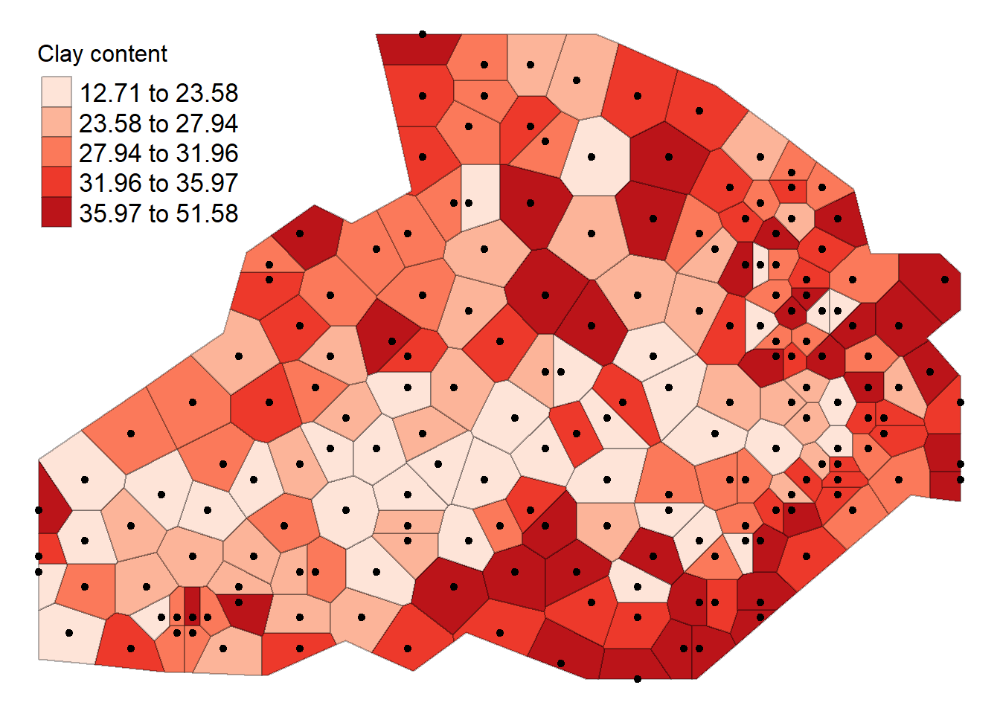
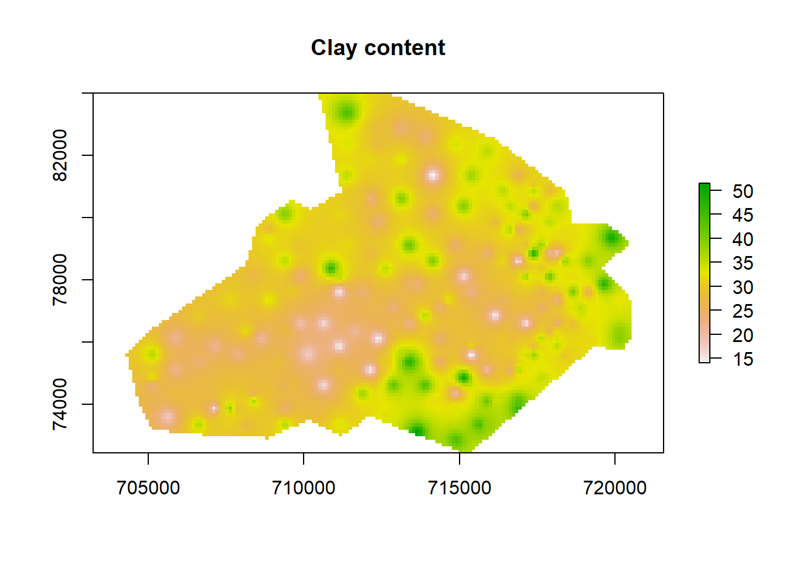
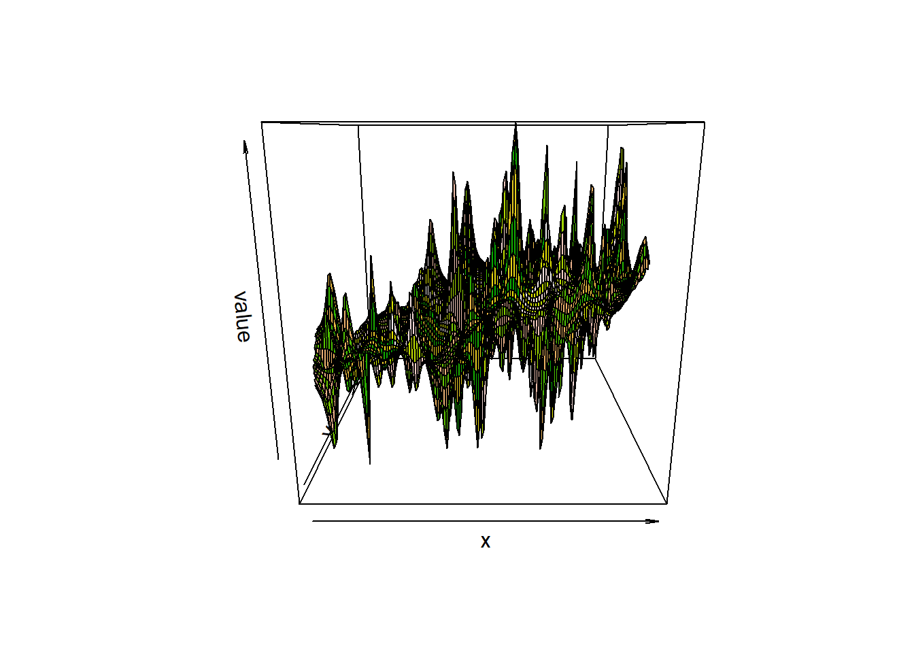
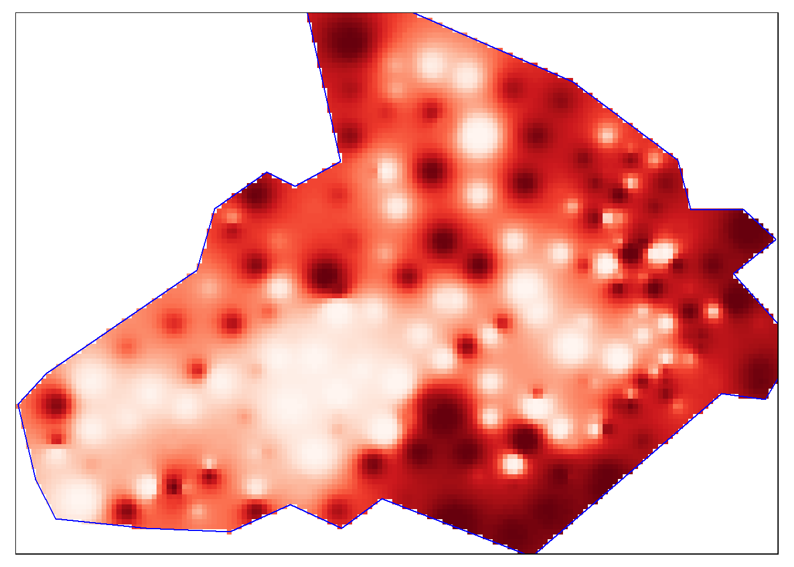

Non-geostatistical prediction
Load the packages and data we will use.
pacman::p_load(sp, rgdal,rgeos,tmap,raster)
shp <- readOGR("soil_data_CIAT.shp")## OGR data source with driver: ESRI Shapefile
## Source: "D:\JKUAT\ShortCourses\Geostatistics\intro2geostats\soil_data_CIAT.shp", layer: "soil_data_CIAT"
## with 200 features
## It has 7 fields
## Integer64 fields read as strings: X Yplot(shp, pch = 19, col = "red")
View coordinate reference system and extents of the shapefile.
crs(shp)## CRS arguments:
## +proj=utm +zone=36 +datum=WGS84 +units=m +no_defs +ellps=WGS84
## +towgs84=0,0,0extent(shp)## class : Extent
## xmin : 705125
## xmax : 720125
## ymin : 72875
## ymax : 83375Thiessen polygons
- Thiessen polygons are formed to assign boundaries of the areas closest to each unique point. Therefore, for every point in a dataset, it has a corresponding Thiessen polygon.
- We will create Thiessen polygons for the soil data, then use the polygons to map the carbon at their corresponding locations.
- The spatstat package provides the functionality to produce Thiessen polygons via its dirichlet tessellation of spatial point patterns function (dirichlet()).
- We also need to first convert the data to a ppp (point pattern) object class. The maptools package will help us achive this via as.ppp() function.
Load necessary packages and convert data to point pattern.
pacman::p_load(spatstat, maptools)
# Create a tessellated surface
dat.pp <- as(dirichlet(as.ppp(shp)), "SpatialPolygons")
dat.pp <- as(dat.pp,"SpatialPolygons")Define the projection to the ppp object.
proj4string(dat.pp) <- crs(shp)
plot(dat.pp, pch = 19)
The Polygons are extended beyond points boundary so get the boundary and clip the Thiesen polygon
bdy <- readOGR("soil_boundary.shp")## OGR data source with driver: ESRI Shapefile
## Source: "D:\JKUAT\ShortCourses\Geostatistics\intro2geostats\soil_boundary.shp", layer: "soil_boundary"
## with 1 features
## It has 1 fieldsdat.pp <- intersect(dat.pp, bdy)
plot(dat.pp, pch = 19)
Assign to each polygon the carbon information.
int.Z <- over(dat.pp, shp[,"Carbon"], fn=mean, na.rm=TRUE) Map Thiessen polygons and Carbon sampled points.
tm_shape(dat.pp) + tm_borders(alpha=.5, col = "black") +
tm_shape(shp) + tm_dots(col = "red", scale = 2.5, shape = 16)
Create a SpatialPolygonsDataFrame object with Carbon content,
thiessen <- SpatialPolygonsDataFrame(dat.pp, int.Z)then visualize our point data using the newly formed Thiessen polygons.
tm_shape(thiessen) + tm_fill(col = "Carbon", style = "quantile", palette = "Reds", title = "Carbon content") + tm_borders(alpha=.3, col = "black") +
tm_shape(shp) + tm_dots(col = "black", scale = 2.5) +
tm_layout(legend.position = c("left", "top"), legend.text.size = 1.05, legend.title.size = 1.2, frame = FALSE)
Inverse Distance Weighting (IDW)
- IDW is a means of converting point data of numerical values into a continuous surface to visualise how the data may be distributed across space.
- The technique interpolates point data by using a weighted average of a variable from nearby points to predict the value of that variable for each location (de Smith et al, 2018).
- The weighting of the points is determined by their inverse distances drawing on Tobler’s first law of geography.
Load necessary packages and define sample grid based on the extent of data.
unloadNamespace("spatstat")
pacman::p_load(gstat)
grid <-spsample(bdy, type = 'regular', n = 10000)Perform carbon content interpolation using IDW fucntion in Gstat package.
idw <- idw(shp$Carbon ~ 1, shp, newdata= grid)## [inverse distance weighted interpolation]Before we visualize the IDW result we transform the data into a data frame object. We can then rename the column headers.
idw.output = as.data.frame(idw)
names(idw.output)[1:3] <- c("long", "lat", "prediction")Convert the output into a raster in order to visualize the output.
pacman::p_load(raster)
# create spatial points data frame
spg <- idw.output
coordinates(spg) <- ~ long + lat
# coerce to SpatialPixelsDataFrame
gridded(spg) <- TRUE
# coerce to raster
raster_idw <- raster(spg)
# sets projection to British National Grid
projection(raster_idw) <- crs(shp)we can quickly plot the raster to check if its okay.
plot(raster_idw, main= "Carbon content")
Even 3D plots can be used to visualize the predictions using the raster::persp() function..
persp(raster_idw, col=terrain.colors(100, rev = TRUE))
# this package lets us create interactive 3d visualisations
pacman::p_load(rgl)
# we need to first convert the raster to a matrix object type
idw2 <- as.matrix(raster_idw)
persp3d(idw2, col = "red")Now we are ready to plot the raster. We will use the functionality of the tmap package, using the tm_raster() function. The instructions below will create a smoothed surface. In the example we have created 100 colour breaks and turned the legend off, this will create a smoothed colour effect. You can experiment by changing the breaks (n) to 7 and turning the legend back on (legend.show) to make the predicted values easier to interpret.
pacman::p_load(tmap)
tm_shape(raster_idw) + tm_raster("prediction", style = "quantile", n = 100, palette = "Reds", legend.show = FALSE) +
#Overlay the boundary to provide some orientation
tm_shape(bdy) + tm_borders(alpha=1, col = "blue")
Overlay the original carbon data as this provides a good demonstration of how the IDW is distributed.
tm_shape(raster_idw) + tm_raster("prediction", style = "quantile", n = 100, palette = "-Reds",legend.show = FALSE) +
tm_shape(bdy) + tm_borders(alpha=1, col="black") +
tm_shape(shp) + tm_bubbles(size = "Carbon", col = "Carbon", palette = "-Purples", contrast=1, style = "quantile", legend.size.show = FALSE, title.col = "Carbon") +
tm_layout(legend.position = c("left", "top"), legend.text.size = 1.1, legend.title.size = 1.4, frame = FALSE, legend.bg.color = "white", legend.bg.alpha = 0.5)References
De Smith, M. J., Goodchild, M. F., & Longley, P. (2018). Geospatial analysis: a comprehensive guide to principles, techniques and software tools. Troubador publishing ltd.